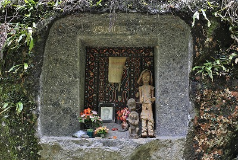
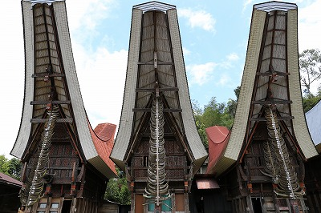

ボリとその周辺/Bori&around
マランテの墓を見た後、
ボリという村に向かう。
道中、見かけた墓。

墓の軒下には
石で造られたタウタウ人形が置かれていた。
椅子に座っており、まるで道を通る人々を監視しているかのようだった。
さらに寄り道。
最近葬式をしたばかりの家を訪問した。
庭先の広場には葬式を行う際に使うためだけに建てられた建物が並んでいる。
↑右手にある3層の櫓は葬儀の際、死者の棺を安置するためのもの。
いわば葬式の際、一番重要な建物だ。
周辺には幅の長い高床建築。これは参列者が座るための桟敷。
成程、大勢の人が参列すると聞いていたが、わざわざ専用の建物まで造るのかー。
広場の中央には
石の柱が建っている。
これも葬式の際に使う重要なモニュメントだ。しかし決して墓石ではない。
石柱の先端には水牛の角が巻きつけてあった。
平坦だった道は段々曲がりくねってきて、徐々に標高が高くなってきている。
そんな山道の途中にある
パンリPangliの墓。
この村には崖や岩がないので家型の墓をつくるのだが、珍しく
木造の墓だ。
墓の脇にあった人形。
どう見ても案山子だが、これもまたタウタウ人形なのだという。
お金がない人はこういう案山子のようなタウタウ人形を奉納するのだ。
墓の前にレンガが積まれていた。周辺を整備するのだろうか。
隣の墓には立派な石像が。
これはオランダ軍と戦って投獄されていた
パウルス・ポン・マッサンカという人物の像。
ある意味、民族の英雄なわけで、タウタウ人形という意味を越えて顕彰の意味も込めた石像なのかもしれない。
墓の裏には珍しく石の棺があった。
墓の外に置いてあるのだから、さすがに中身は入ってないだろう。

見れば、石像のマッサンカ氏の棺だった。
年代モノだと思っていたが、1960年に亡くなったと刻まれている。
案外新しいんだ。
他にもたくさんの棺が積まれていた。
このタイプの墓は棺桶ごと安置するのではなく、棺から出して中身だけ墓に安置するのだろう。
何かすげえな。
方や石彫のタウタウ、方や案山子のタウタウ。
隣同士の墓でも随分違うもんですね。
そんなこんなで
ボリに到着。
路傍に
めちゃカッコイイ墓が。
高さ7〜8ｍの岩のあちこちに四角く墓穴が掘られている。
1つの石から成る集合墓だ。
何だかSF映画に出てくる異星人の家みたいでワクワクするじゃないか！
墓の開口部には故人の写真がよく掲げられている。
その他、花、水、菅笠など。

あと十字架。
繰り返すが、トラジャの人は今では
大多数がキリスト教徒だ。
トラジャの宗教人口は多い順にプロテスタント、カトリック、地元の伝統宗教アルク・トドロ、
仏教、ヒンズー教、最後にイスラム教となっている。
場所柄イスラム教がもう少し多くてもおかしくないとは思うのだが、やはり豚を屠れない(食えない）宗教は信仰するわけにはいかない、ということか。あとヒンズー教は牛NGだしね（水牛ならいいんだっけ？）。
じゃあ牛豚を屠ったりするのはキリスト教の教義としてどうなんだ、という問題もあるが、そこは
キリスト教会としては黙認なのだとか。
この地でかつてキリスト教とイスラム教の激しい教化競争があったため、キリスト教側としてもトラジャ族の根本的なアイデンティティともいえる葬送儀礼習俗にまでは口出しできない、というのが実情のようだ。
混浴ダメデース！首狩りイケマセーン！と各地で伝統習俗を禁止してきたが、トラジャ族の死生観だけは変えられなかったのだ。

墓のある巨石の脇には穴が掘られている。
どうも、地面よりやや低い位置に墓穴を掘ろうとしているようだ。
この周辺も露出している岩が少ないので
僅かなスペースでも無駄なく墓として使おう、という必死さが伝わってくる。
このように遺体が安置できそうなサイズの岩があったら速攻、墓にされちゃうのだ。
数年後、これらの岩が掘りつくされたら、その後は先ほどのパンリ村のように家型の墓に切り替わるんだろうな。
こちらも中々いい感じの墓穴群。

岩の一番上の部分に新しく墓穴を掘っているところ。
竹で出来た足場はその石工用が出入りするためのもの。
穴の中からカーン、カーン、とノミで石を刻む音が聞こえてくる。
…手作業なんだ…。
凄い手間だな。ご苦労様です。
裏に回り込むと裏側にも墓穴が。全方位穴だらけの岩だな…。

そんな力作が数多く並んでいる。
こちらはタウタウ人形の代わりなのだろうか、小さな人形が並んでいた。
ちなみに前項で埋葬後、墓には誰も来ないような書き方をしてしまったが、確認したら命日には一族全員が墓参に訪れるそうだ。
トラジャの人々は海外に移住している人が多いので、
命日には世界中から親族がやって来るらしい。
それはそれは大変な騒ぎなのだとか。
こちらはまだ未使用の墓。
さらに入り口の四角だけ掘って中断してしまった墓。
石工への支払いが途絶えると工事は中止してしまうのだそうな。
これもまたいい感じの墓ではないか。
この自然石に四角く穴が開いているタイプ、結構気に入っちゃったなあ。
ここは最近葬式があったのか、花輪がたくさん積み上げられていた。
チョットした斜面でも岩肌と見れば墓にしちゃう。
最近は鍵付きタイプもある。
盗まれるんだろうか、遺体。
ベッピンさんの墓。
入り口に水牛の彫刻が施された墓。
後付けじゃなくて岩から削り出しですよ。
しばらく歩くと
石柱が物凄い勢いで林立している広場に出る。
ここはボリの人たちが葬式を行う場所で、一族ごとにそれぞれ石柱が建てられている。
大きいものは5〜6ｍもあり、地下に埋まっている部分もあるだろうから、相当大きな石柱といえる。
このような大きな石柱は他ではあまり見られない。
というのもボリは
石の産地で、金持ちの一族が競うように巨大な石柱を建てるのだ。
訪問した時も近くで石柱となる石を切り出していた。他の村で行う葬式に使うのだという。
石柱の近くにあった櫓にはたくさんの
牛の顎の骨が掲げられていた。
これも過去に行われた葬式で屠られた牛のものなのだろう。
ボルの集落にも寄ってみた。
ここも伝統的なトンコナンハウスが並んでいて、迫力がある。

母屋とその両脇にある居住棟には
水牛の角がずらりと並んでいた。
先に紹介したブントゥ ド パサの旧家も凄かったが、ここもどうしてどうして。
三棟にわたって角が掲げてある光景は中々のもの迫力。
もちろん全て葬式の際に屠った水牛の角であり、ウチはこれだけ水牛潰しましたけど、的な自慢コーナーなのだ。
帰りに通りかかった
パリンディンParindingの集落。
多くのトンコナンが建っている。
トンコナンは決して歴史的な建物だけでなく、現在でもバンバン新築されているのだ。
なので、ぶっちゃけトラジャに3日もいるとあまり珍しくなくなってしまう。
だが、これだけたくさんあるとやっぱり面白い。
トンコナンの屋根は船に似せてあると、どの本を読んでも説明されている。
しかし個人的にはこの
独特な屋根の形式は牛の角を象っているように思えてならない。
何故なら、トラジャの人々の生活文化の中で、他に船を象徴するデザインってないんだよね…。
むしろ水牛の角は伝統的な文様やデザインにしばしば登場するし、
彼らの水牛の角へのこだわり方はチョット異常なレベルだし。
そもそも、どう見たって船より水牛の角に似てるっしょ。